The whole guide on one page¶
1. How LaTeX works¶
1.1 The idea¶
You write a text file ending in .tex, and a program called an engine turns it into a PDF. That step is called compiling. It's closer to running code than to saving a Word file: errors stop it, and the source and result are separate.
minimal.tex
\documentclass{article}
\begin{document}
Hello, world. One plus one is $1 + 1 = 2$.
\end{document}
Compile it with:
pdflatex minimal
What you should see at the end of the run
Output written on minimal.pdf (1 page, 15054 bytes).
Transcript written on minimal.log.
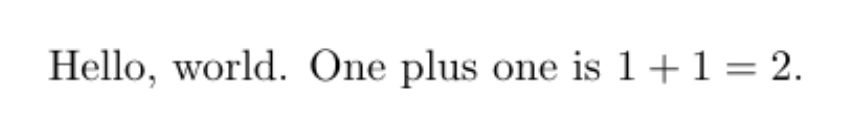
The top of minimal.pdf.
This makes minimal.pdf, plus helper files such as minimal.log, which records what happened, and minimal.aux, which remembers numbers between runs.
1.2 The parts of a document¶
-
The preamble is everything before
\begin{document}. It sets the document type and loads packages. Nothing here is printed. -
The body is everything between
\begin{document}and\end{document}.
1.3 Syntax¶
-
A command starts with a backslash:
\section{Method}. Required inputs, or arguments, go in braces, and optional ones in square brackets:\documentclass``[``11pt``]``{article}. -
An environment has a start and an end, and changes what's between them:
\begin{center}and\end{center}. -
A comment starts with
%and runs to the end of the line. -
A blank line starts a new paragraph. Single line breaks and extra spaces are ignored.
-
Special characters need a backslash to print:
\%,\$,\&,\#,\_,\{,\}.
1.4 Why you sometimes compile more than once¶
Numbers for sections, equations and citations are only known after a full pass. LaTeX writes them to the .aux file on one run, and reads them on the next. So a contents page or a reference can need two or three runs. A warning saying Rerun to get cross-references right means exactly that.
The full sequence with a bibliography is:
pdflatex main
bibtex main
pdflatex main
pdflatex main
On the first run of the complete report, LaTeX doesn't yet know the numbers, so it says so. These warnings are normal at this stage, and they went away after the full sequence:
What you should see (only the warning and result lines)
$ pdflatex main
Package natbib Warning: Citation `clarke2001' on page 1 undefined on input line
LaTeX Warning: Reference `sec:method' on page 1 undefined on input line 30.
LaTeX Warning: Reference `tab:walls' on page 1 undefined on input line 31.
LaTeX Warning: Reference `fig:loss' on page 1 undefined on input line 31.
LaTeX Warning: Reference `eq:loss' on page 1 undefined on input line 39.
Package natbib Warning: There were undefined citations.
LaTeX Warning: There were undefined references.
LaTeX Warning: Label(s) may have changed. Rerun to get cross-references right.
$ pdflatex main (the last run of the sequence)
Output written on main.pdf (2 pages, 107972 bytes).
The tool latexmk -pdf main works out how many runs are needed and does them for you, though it needs Perl on Windows.
1.5 Choosing an engine¶
Engine |
Use it when |
|---|---|
|
The default for most documents, with the widest compatibility |
|
You want system fonts, or scripts such as Urdu and Arabic |
|
You want system fonts plus scripting with Lua |
1.6 Reading errors¶
An error line starts with !. Press Enter past it in a terminal, or use -interaction=nonstopmode so that it doesn't stop. Fix the first error, because one fault can cause many later ones.
! Undefined control sequence.
l.12 \sectoin
{Method}
This says line 12 uses a command that doesn't exist, here a misspelling. The troubleshooting chapter lists common errors.
2. Structure, text and appearance¶
2.1 Document classes¶
The class sets the overall type of document.
| Class | For |
|---|---|
article |
Papers and short reports |
report |
Long reports with chapters |
book |
Books |
beamer |
Slides |
2.2 Headings and contents¶
\section{Method}
\subsection{Data}
\subsubsection{Cleaning}
\tableofcontents
In a complete report, the title page, the contents and each chapter start on new pages:
chapters.tex
% A long document with a title page, contents and chapters. Build: pdflatex chapters, twice
\documentclass[11pt,a4paper]{report}
\title{Heat Loss Through a Wall}
\author{A Student}
\date{1 November 2026}
\begin{document}
\maketitle
\tableofcontents
\chapter{Method}
Heat flows through a wall in proportion to its area and the temperature difference.
\section{2.3 Data}
The walls come from a small survey.
\subsection{2.3.1 Cleaning}
Walls with no recorded U-value were left out.
\section*{Thanks}
A starred heading has no number, and stays out of the contents.
\chapter{Results}
Insulated walls lose the least heat.
\end{document}
Compile it twice, because the contents are only known after the first run.
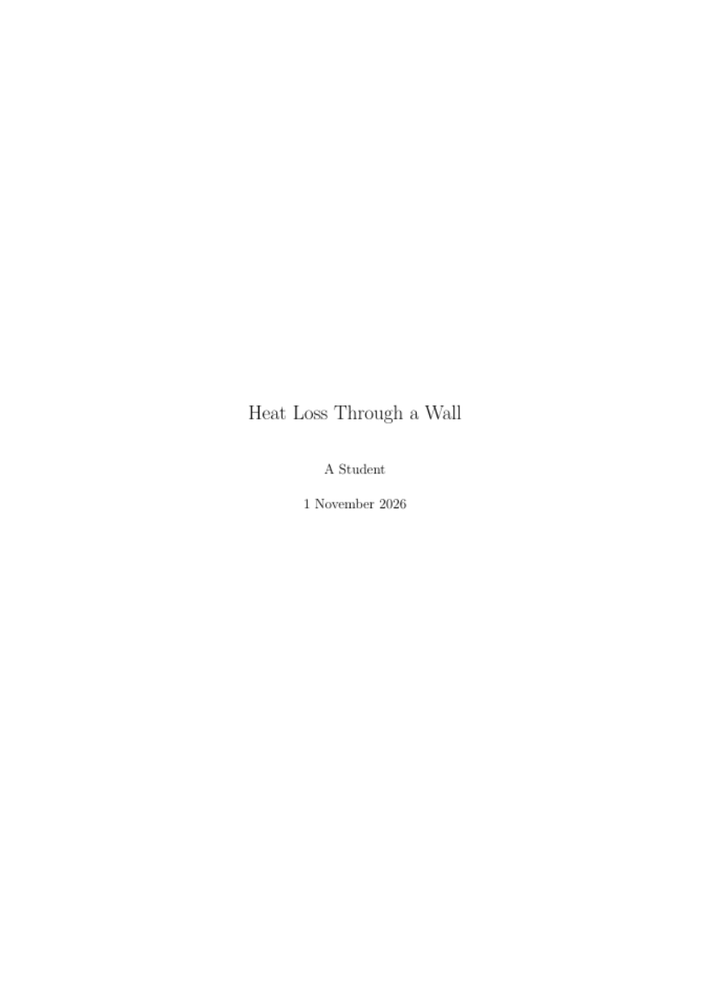
Title page
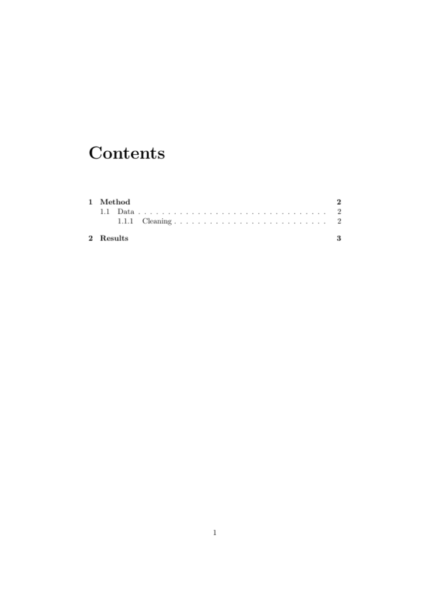
Contents
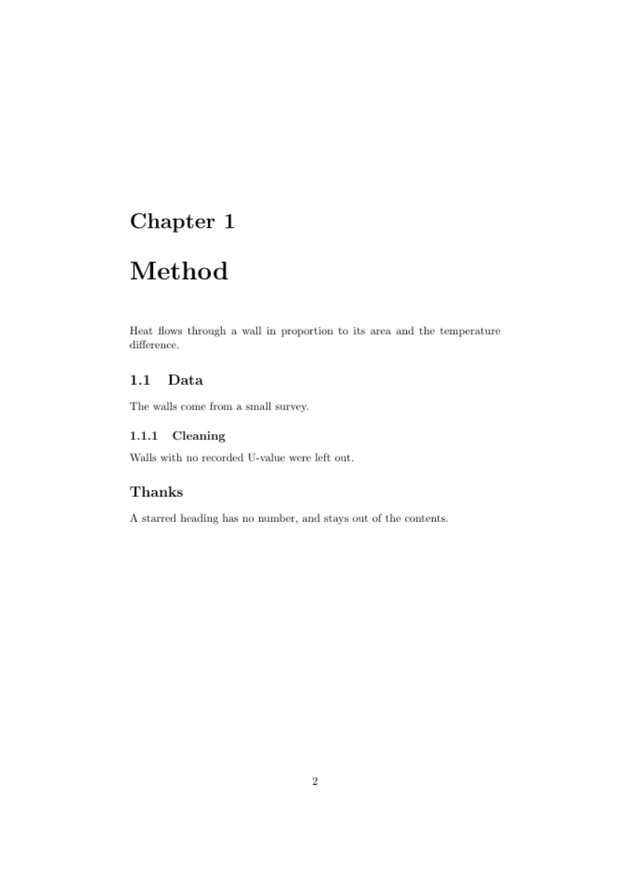
First chapter
Numbers come automatically, and adding a star, as in \section*{Thanks}, leaves a heading unnumbered and out of the contents. Split long documents into files with \input{chapter1}.
2.4 Text and fonts¶
\emph{emphasis} \textbf{bold} \texttt{code} \underline{underlined}
{\small smaller text} {\large larger text}
Prefer \emph over forcing italics, because it describes meaning, and it adapts when nested. For dashes, - joins words, -- makes ranges such as 10--20, and --- is a long dash. Quotes are written as two backticks and two apostrophes.
2.5 Fonts¶
With pdflatex, fonts come from packages, for example \usepackage{helvet} with \renewcommand{\familydefault}{\sfdefault} for a sans-serif body. With xelatex, you can name any installed font:
\usepackage{fontspec}
\setmainfont{Source Serif 4}
2.6 Colour¶
\usepackage{xcolor}
\definecolor{brand}{HTML}{0D6A6E}
\textcolor{brand}{Coloured text}
Define each colour once, by name, so that you can change the whole document from one line. Don't rely on colour alone to carry meaning, because some readers can't see the difference and pages may be printed in black and white.
2.7 Lists¶
\begin{itemize}
\item A point
\end{itemize}
\begin{enumerate}
\item A first step
\end{enumerate}
2.8 Page layout¶
\usepackage[a4paper,margin=2.5cm]{geometry}
\usepackage{setspace}
\onehalfspacing
\usepackage{fancyhdr}
\pagestyle{fancy}
2.9 Links¶
\usepackage{hyperref} % load this near the end of the preamble
\href{https://example.org}{a link}
\url{https://example.org}
hyperref also makes every cross-reference and contents entry clickable.
3. Mathematics¶
3.1 Inline and displayed¶
Inline maths sits within a sentence, and displayed maths gets its own line. Load amsmath for anything beyond the basics.
The energy is $E = mc^2$ here.
\[ E = mc^2 \] % displayed, no number
\begin{equation} % displayed and numbered
E = mc^2
\label{eq:energy}
\end{equation}
In the file below, these forms and some of the building blocks come together. Only the numbered equations get a number at the right.
maths.tex
% The maths from this chapter in one document. Build: pdflatex maths
\documentclass[11pt]{article}
\usepackage{amsmath}
\begin{document}
The energy is $E = mc^2$ here.
\[ E = mc^2 \]
E = mc^2
\tag{?}
\begin{align*}
r &= \frac{s}{c + v} \\
&= \frac{e v}{c + v} \\
&= \frac{e}{1 + c/v}.
\end{align*}
Building blocks: $x_{i,j}$, $\sqrt{x}$, $\alpha$, $\Delta$, $\sum_{i=1}^{n} x_i$,
$\int_0^1 x \, dx$, $a \approx b$ and $\left( \frac{a}{b} \right)$.
\end{document}
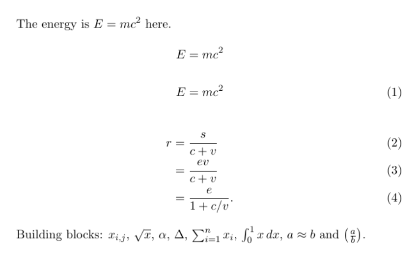
What that file compiles to.
3.2 The building blocks¶
| You want | You write |
|---|---|
| Superscript and subscript | x^2, x_i, x_{i,j} |
| Fraction | \frac{a}{b} |
| Square root | \sqrt{x} |
| Greek letters | \alpha, \mu, \Delta |
| Sum and integral | \sum_{i=1}^{n}, \int_0^1 |
| Operators and relations | \times, \approx, \leq, \rightarrow |
| Words in maths | \text{hours} |
| Spacing | \, small, \quad wide |
| Brackets that grow | \left( \frac{a}{b} \right) |
Braces group things, so x^{10} raises the whole 10, while x^10 raises only the 1.
3.3 Aligned derivations¶
Long derivations read best one step per line. Use & to mark where lines align, and \\ to end a line.
\begin{align}
r &= \frac{s}{c + v} \\
&= \frac{e v}{c + v} \\
&= \frac{e}{1 + c/v}.
\end{align}
Each line gets a number, and align* removes all of them. \nonumber removes one.
3.4 Maths as your own commands¶
If a symbol means something in your project, name it once, and every use will follow.
\newcommand{\rate}{\ensuremath{r}}
3.5 Tips¶
-
Spell out what each symbol means in the text around the equation.
-
Treat an equation as part of a sentence, with punctuation.
-
Don't use
$or `
` skips LaTeX's spacing rules.
4. Tables and figures¶
4.1 Tables¶
A tabular builds the grid, and a table around it adds a caption and lets it float to a good position. The booktabs package gives clean horizontal rules, and it's best to avoid vertical lines altogether.
\begin{table}[ht]
\centering
\caption{Heat loss through a wall.}
\label{tab:walls}
\begin{tabular}{lrr} % left, right, right
\toprule
Wall & $U$ & $Q$ \\
\midrule
Solid brick & 2.10 & 315 \\
Insulated & 0.45 & 68 \\
\bottomrule
\end{tabular}
\end{table}
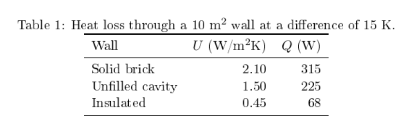
The table in the complete report, with three walls. Note the horizontal rules, and no vertical ones.
4.2 Figures¶
\usepackage{graphicx}
\begin{figure}[ht]
\centering
\includegraphics[width=0.8\linewidth]{figures/map.pdf}
\caption{Heat loss across the study area.}
\label{fig:map}
\end{figure}
Use PDF or SVG-derived vector files for plots, as they stay sharp at any size. Use PNG for images at 300 dpi or more for print.
4.3 Plots drawn from data¶
pgfplots draws a chart directly in LaTeX, so its fonts match the document.
\begin{tikzpicture}
\begin{axis}[xlabel={U-value}, ylabel={Heat loss (W)}]
\addplot coordinates {(0.45,68) (1.5,225) (2.1,315)};
\end{axis}
\end{tikzpicture}
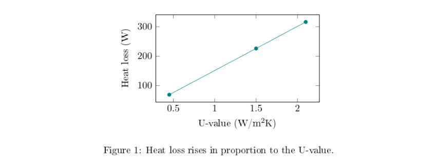
The same plot compiled in the complete report. Its labels use the same font as the text.
For anything complex, generate the figure with a script, such as Python with Matplotlib, and include the file. Then the figure can be rebuilt from its data.
4.4 Introducing them properly¶
Every table and figure should be mentioned in the text before it appears, and each needs a caption that says what it shows. Put the \label after the \caption, or the reference will point to the section number instead. Floats move: [``ht``] asks for here or the top of a page, which is why you should refer to "Table 1" and not "the table below".
5. References, links and bibliographies¶
5.1 Cross-references¶
Give anything numbered a label, then refer to it. The number updates itself if things move.
\section{Method}\label{sec:method}
See Section~\ref{sec:method} and Equation~\eqref{eq:energy}.
The ~ is a non-breaking space, which keeps "Section" and its number on one line. A prefix such as sec:, eq:, tab: or fig: is a helpful habit. The cleveref package can add the word for you: \cref{sec:method}.
5.2 Citations¶
Keep references in a separate .bib file, and cite them by key:
refs.bib
@book{clarke2001,
author = {Clarke, Joseph A.},
title = {Energy Simulation in Building Design},
edition = {2},
publisher = {Butterworth-Heinemann},
address = {Oxford},
year = {2001}
}
\usepackage[round]{natbib}
...
As \citet{clarke2001} shows, this holds \citep{clarke2001}.
...
\bibliographystyle{plainnat}
\bibliography{refs}
The bibliography tool picks up only the items you cite. Zotero can export a .bib file, and its Better BibTeX add-on keeps that file updated. biblatex with the biber tool is a more flexible alternative, while journals often supply their own .bst style for BibTeX.
5.3 A complete small report¶
This pulls together everything so far: sections, equations, a table, a chart, cross-references, a bibliography and links.
main.tex
% A complete small report: sections, maths, a table, a figure, cross-references, a bibliography and links.
% Build: pdflatex main, bibtex main, pdflatex main, pdflatex main
\documentclass[11pt,a4paper]{article}
% Packages. hyperref goes last among these, because it changes how others work.
\usepackage[T1]{fontenc}
\usepackage[margin=2.5cm]{geometry}
\usepackage{amsmath}
\usepackage{booktabs}
\usepackage{graphicx}
\usepackage{pgfplots}
\usepackage[round]{natbib}
\usepackage{xcolor}
\usepackage[colorlinks=true,linkcolor=teal,citecolor=teal,urlcolor=teal]{hyperref}
\pgfplotsset{compat=1.17}
% Your own command: change the look of every "term" from this one line.
\newcommand{\term}[1]{\textbf{#1}}
\title{Heat Loss Through a Wall}
\author{A Student}
\date{\today}
\begin{document}
\maketitle
\tableofcontents
\section{5.4 Introduction}\label{sec:intro}
A \term{U-value} measures heat flow through one square metre of a surface for each degree of
temperature difference \citep{clarke2001}. Section~? gives the equation, and
Table~? and Figure~? apply it.
\section{5.5 Method}\label{sec:method}
Heat loss $Q$ follows from the U-value $U$, the area $A$ and the temperature difference $\Delta T$:
Q = U A \, \Delta T.
\tag{?}
Equation~(?) is a steady-state estimate. Longer derivations line up at the equals sign:
\begin{align*}
Q &= 2.1 \times 10 \times 15 \\
&= 315 \text{ W}.
\end{align*}
\section{5.6 Results}\label{sec:results}
\begin{table}[ht]
\centering
\caption{Table . Heat loss through a 10 m$^2$ wall at a difference of 15 K.}
\begin{tabular}{lrr}
\toprule
Wall & $U$ (W/m$^2$K) & $Q$ (W) \\
\midrule
Solid brick & 2.10 & 315 \\
Unfilled cavity & 1.50 & 225 \\
Insulated & 0.45 & 68 \\
\bottomrule
\end{tabular}
\end{table}
\begin{figure}[ht]
\centering
\begin{tikzpicture}
\begin{axis}[width=8cm, height=5cm, xlabel={U-value (W/m$^2$K)}, ylabel={Heat loss (W)}]
\addplot[teal, mark=*] coordinates {(0.45,68) (1.5,225) (2.1,315)};
\end{axis}
\end{tikzpicture}
\caption{Heat loss rises in proportion to the U-value.}
\label{fig:loss}
\end{figure}
\section{5.7 Conclusion}
Find this project's source at \url{https://ahmadammar.github.io/teaching/latex/}.
\bibliographystyle{plainnat}
\bibliography{refs}
\end{document}
It compiles to these two pages. The links are coloured teal, and every number comes from a label.
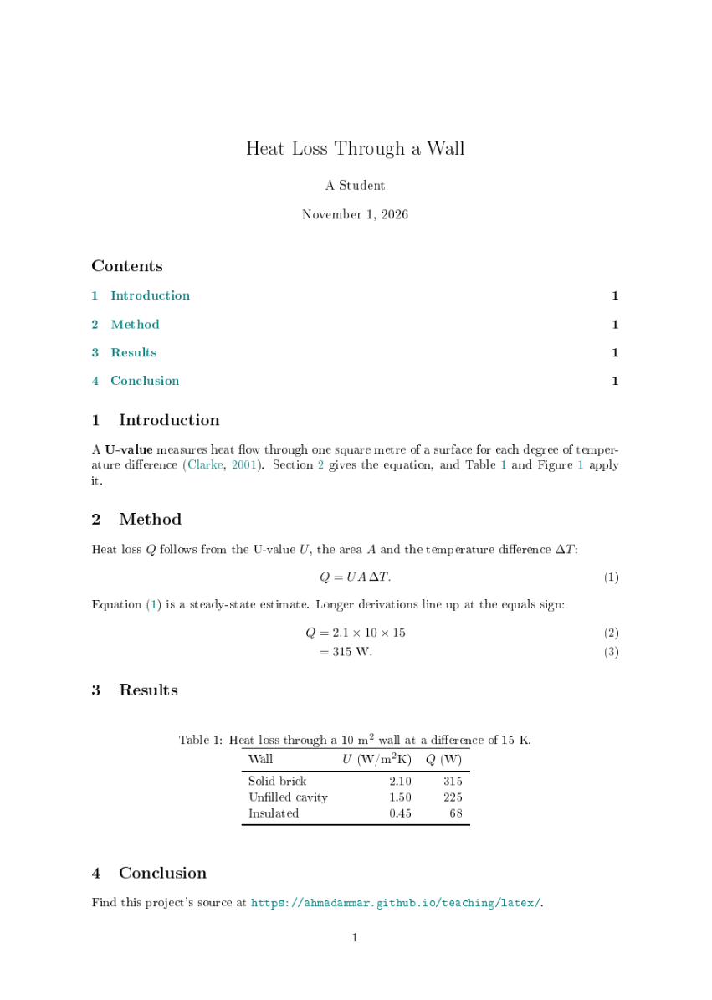
Page 1
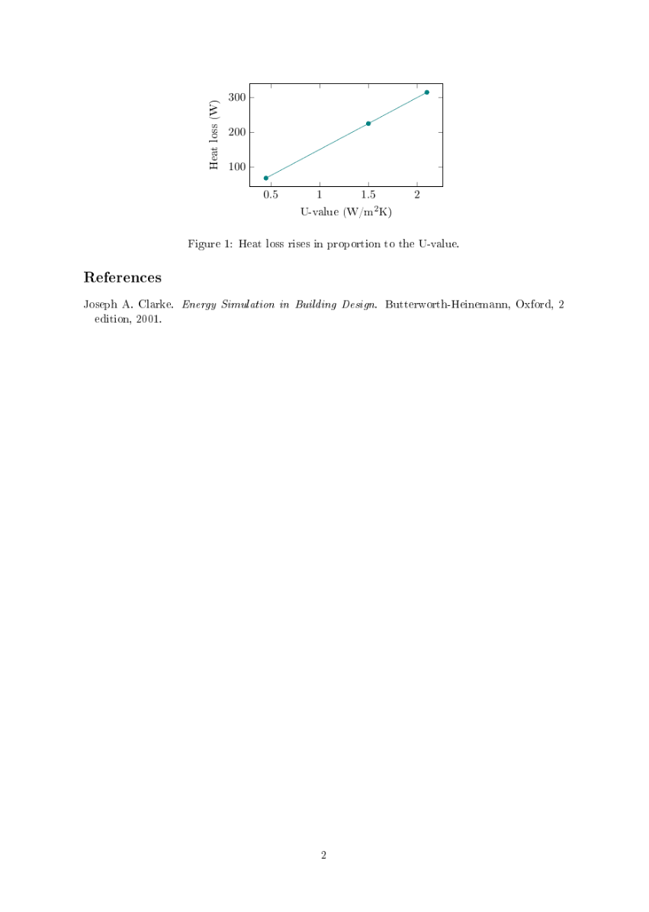
Page 2
6. Your own commands, packages and themes¶
6.1 LaTeX as a language¶
LaTeX is a programming language, and its commands behave like functions and variables.
\newcommand{\studyarea}{Greater London}
% A function with one parameter, used as \term{surplus value}
\newcommand{\term}[1]{\textbf{#1}}
% A function with two parameters, where the first is optional
\newcommand{\money}[2][PKR]{#1~#2} % \money{160} gives PKR 160
#1 is the first parameter. \renewcommand changes an existing command.
6.2 Environments and counters¶
\newtheorem{example}{Example}[section] % numbered within each section
\begin{example}[A coffee-shop worker]
...
\end{example}
\newcounter{step}
\stepcounter{step}\thestep
6.3 Numbers from your analysis¶
Don't type results by hand into a document. Have your analysis write a file of commands:
\newcommand{\meanDemand}{369}
Then \input{numbers} and write \meanDemand in the text. When the data changes, the document follows. This prevents the most common errors in scientific writing, as described in the Git and automation guide.
6.4 Your own style file¶
Put a shared look in a .sty file, then load it in any document.
\ProvidesPackage{mystyle}
\RequirePackage{xcolor}
\definecolor{brand}{HTML}{0D6A6E}
\usepackage{mystyle}
For a whole document type, such as a thesis, write a .cls class file instead. Most journals and universities supply one. Keep your text separate from the style, so that moving to a different template only needs one change.
6.5 Useful packages¶
| Package | Purpose |
|---|---|
amsmath |
Mathematics |
geometry |
Page size and margins |
graphicx |
Images |
booktabs |
Clean tables |
longtable, tabularx |
Long and flexible tables |
xcolor |
Colour |
hyperref |
Links |
cleveref |
Automatic reference words |
natbib, biblatex |
Citations |
siunitx |
Numbers and units |
tikz, pgfplots |
Diagrams and plots |
glossaries |
Glossaries and acronyms |
tcolorbox |
Coloured boxes |
beamer |
Slides, as a class |
Load only what you use, and load hyperref late, as it changes many others.
7. Slides, Word, web pages and images¶
7.1 Slides with Beamer¶
slides.tex
% Slides with the beamer class. Build: pdflatex slides
\documentclass[aspectratio=169]{beamer}
\usetheme{default}
\setbeamertemplate{navigation symbols}{}
\title{Heat Loss Through a Wall}
\author{A Student}
\begin{document}
\begin{frame}
\titlepage
\end{frame}
\begin{frame}{The equation}
\begin{itemize}
\item<1-> Heat loss depends on the wall, its area and the temperature.
\item<2-> $Q = U A \, \Delta T$
\end{itemize}
\end{frame}
\end{document}
It compiles to three PDF pages, because each reveal is its own page:
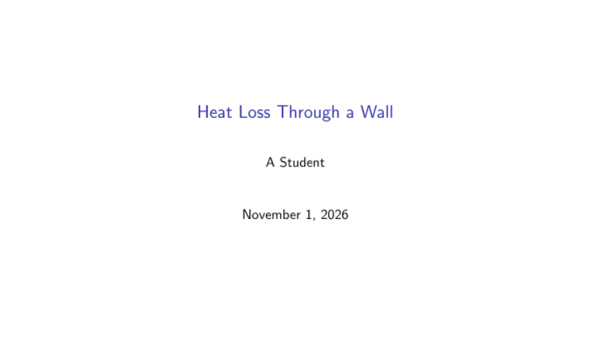
Title slide
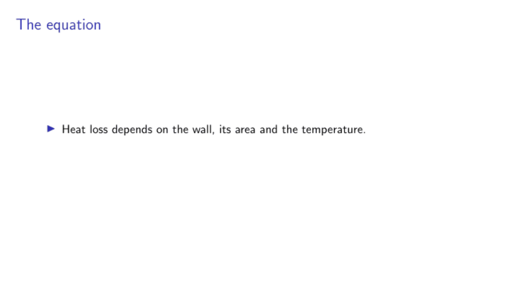
First reveal
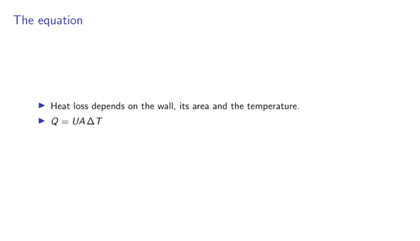
Second reveal
<1-> and <2-> reveal items one click at a time. \usetheme changes the look.
7.2 Posters¶
The beamerposter, tikzposter and baposter packages make large single pages. Set the paper size, then build it like any other document.
7.3 Word¶
Journals and co-authors often want .docx. Pandoc converts LaTeX, including citations:
pandoc main.tex -o main.docx --citeproc --bibliography=refs.bib
Pandoc writes equations as editable Word equations, and --csl with a style file sets the citation style. Complex layouts and custom commands may not survive, so always check the result, especially tables. My research-helpers package has a latex2docx tool built for this.
7.4 Web pages¶
Pandoc also makes HTML. pandoc main.tex -o main.html --mathjax gives one page, with equations drawn by MathJax in the browser. For a whole site, split the document by section, and let a site generator such as MkDocs handle the navigation.
Things need care in conversion, so test the result in a browser. In my own pamphlet project, these all caused real faults:
-
Dollar signs for money turned text into maths.
-
Print-only commands such as
\topruleshowed in red inside equations. -
Commands the browser doesn't know, such as
\pounds, needed defining. -
Labels needed converting into links and numbers.
7.5 PowerPoint and images¶
PowerPoint has no good route from LaTeX, so the reliable method is to compile to PDF, turn each page into an image, then build a deck with those images and speaker notes:
from research_helpers.carousel import pdf_to_images, images_to_pptx
images = pdf_to_images("slides.pdf", "images", pixels=1440)
images_to_pptx(images, "slides.pptx", notes=["Read this aloud."] * len(images))
The slides look exact, though you edit them in LaTeX and not in PowerPoint.
7.6 One source, many outputs¶
The principle across all of these is to edit one source and generate everything else. The Git and automation guide shows how to make this happen by itself.
8. Good practice and version control¶
8.1 A tidy project¶
paper/
main.tex the document's skeleton
sections/ one file for each section
figures/ generated by scripts
tables/ generated by scripts
refs.bib
code/ scripts that make the figures, tables and numbers
build/ outputs, not tracked
8.2 Version control¶
LaTeX is text, so Git handles it well. Put each sentence on its own line, so that a change shows as one changed sentence. Keep helper files out of Git with a .gitignore:
*.aux
*.log
*.out
*.toc
*.bbl
*.blg
*.synctex.gz
Tag each version you send out, as covered in the Git and automation guide.
8.3 Reproducible builds¶
A document is reproducible if someone else can rebuild it from your files.
-
Record the commands in a README or a script.
-
Generate figures, tables and numbers with code.
-
Build in a clean folder now and then, because old helper files can hide faults.
-
Keep paths relative, never tied to your own machine.
-
Fix
\date{...}to a real date for a version, because\todaychanges at every compile.
8.4 Accessible documents¶
-
Use real headings, lists and captions.
-
Choose colours with good contrast that still work in greyscale.
-
Prefer colourblind-safe palettes.
-
Set the document's title and language, for screen readers:
\hypersetup{pdftitle={...}}.
8.5 Working with others¶
Overleaf offers live co-editing, and it can sync with Git. Otherwise, agree who changes what, keep to one sentence per line, and use latexdiff old.tex new.tex > changes.tex to produce a marked-up comparison for readers who don't use Git.
9. Troubleshooting and cheat sheet¶
9.1 Common errors¶
Message |
Usual cause |
Fix |
|---|---|---|
|
A misspelt command, or a missing package |
Check the spelling, or load the package |
|
Maths outside maths mode, or an unescaped |
Add |
|
Unbalanced braces |
Find the unmatched |
|
A package isn't installed |
Install it, or let MiKTeX do so |
|
A wrong image or input path |
Check the relative path |
|
The key is wrong, or BibTeX hasn't run |
Check the key, then run the full sequence |
|
A missing label, or too few runs |
Add the label, or compile again |
|
A line is too wide |
A warning, so rewrite if it's visible |
|
A name clash |
Rename your command, as with |
If a document breaks after a strange failure, delete the helper files and compile again.
9.2 Cheat sheet¶
\documentclass[11pt]{article} % document type
\usepackage{amsmath} % load a package
\newcommand{\name}[1]{...#1...} % your own command
\section{Title}\label{sec:x} % heading with a label
\ref{sec:x} \eqref{eq:y} % refer to a number
\citep{key} % citation
\emph{a} \textbf{b} \texttt{c} % emphasis, bold, code
$a^2$ \[ x \] \frac{a}{b} % maths
\includegraphics[width=\linewidth]{f} % image
\input{file} % another file
pdflatex main # compile
bibtex main # build the bibliography
latexmk -pdf main # do all the runs
latexmk -c # remove helper files
9.3 References and further reading¶
LaTeX Project (n.d.) LaTeX documentation. https://www.latex-project.org/help/documentation/
MacTeX (n.d.) MacTeX. TeX Users Group. https://www.tug.org/mactex/
MiKTeX (n.d.) MiKTeX. https://miktex.org
Overleaf (n.d.) Overleaf. https://www.overleaf.com
TeX Live (n.d.) TeX Live. TeX Users Group. https://www.tug.org/texlive/
Wikibooks (n.d.) LaTeX. https://en.wikibooks.org/wiki/LaTeX
Ammar, A. (n.d.) research-helpers. https://github.com/GeospatialGeeks/research-helpers
Ammar, A. (n.d.) Marxian political economy: project source. https://github.com/AhmadAmmar/marxist-economics